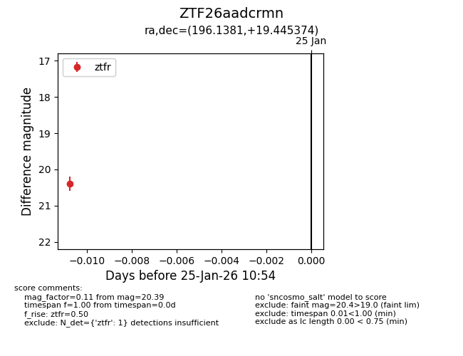
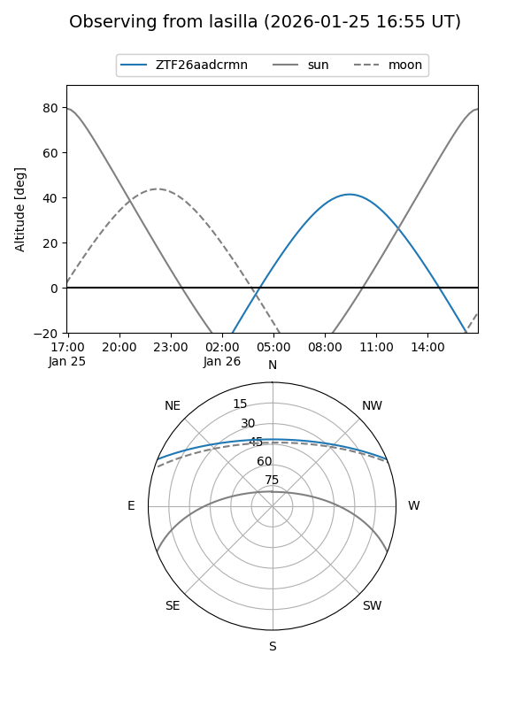
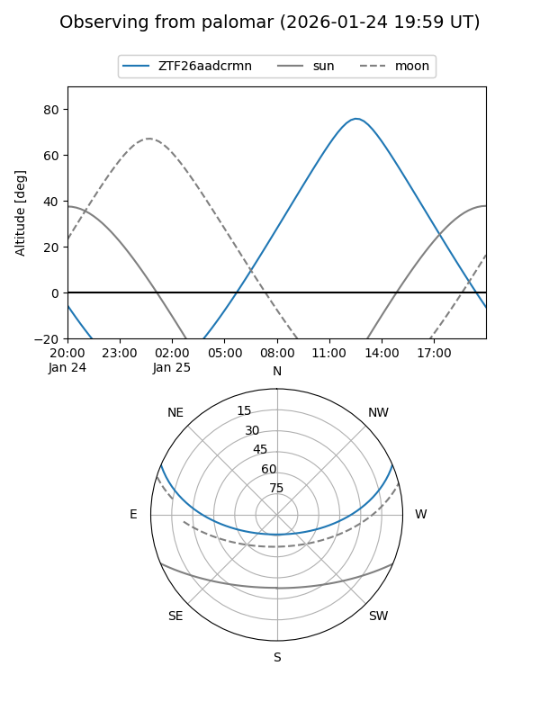

ZTF26aadcrmn
Target ZTF26aadcrmn at 2026-01-25 10:56
Aliases and brokers:
FINK: link
Lasair: link
ALeRCE: link
alt names
ZTF26aadcrmn (ztf,fink_ztf)
Coordinates:
equatorial (ra, dec) = 196.1381,+19.44537
equatorial (HMS+DMS) = 13:04:33.14,+19:26:43.35
galactic (l, b) = (325.0055,+81.74929)
Flags:
Photometry:
last ztfr=20.39
1 ztfr detections
Lightcurve

Visibility


Additional plots